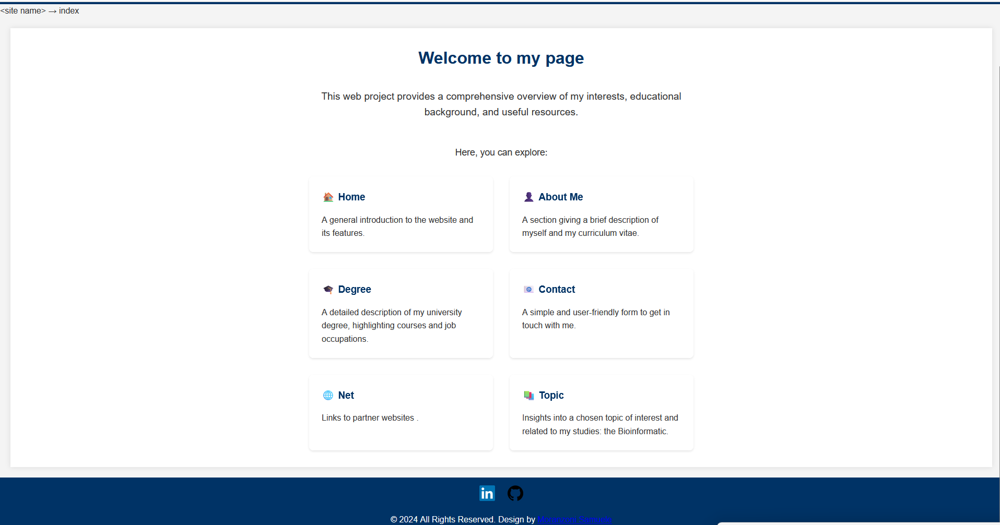
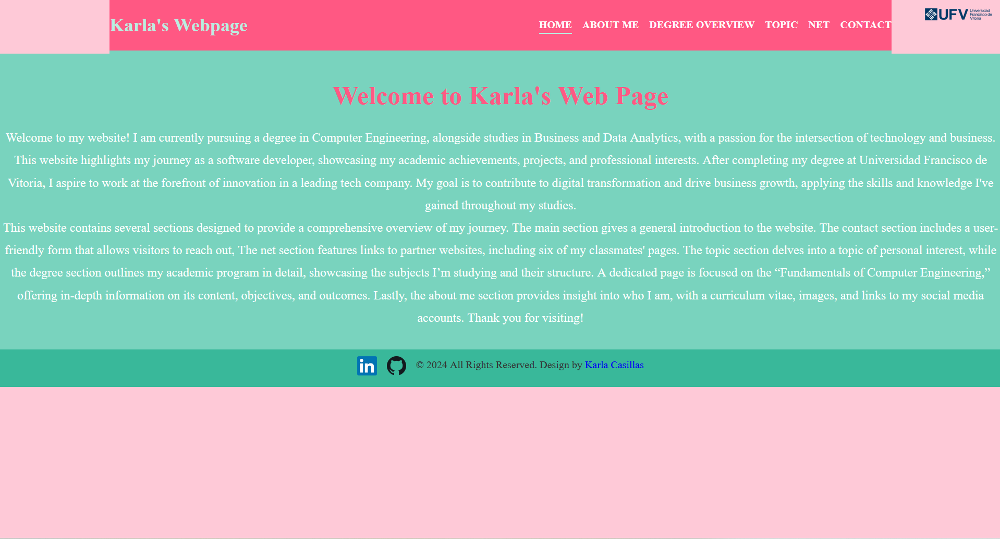

UFV • Practical Work II
Personal Website
Home
About
Degree
FCE
Topic
Net
Contact
Net
Links to other classmates’ websites.

Samuele Moranzoni
Classmate website
Visit website →

Karla Patricia
Classmate website
Visit website →
Jaime Felices
Classmate website
Visit website →